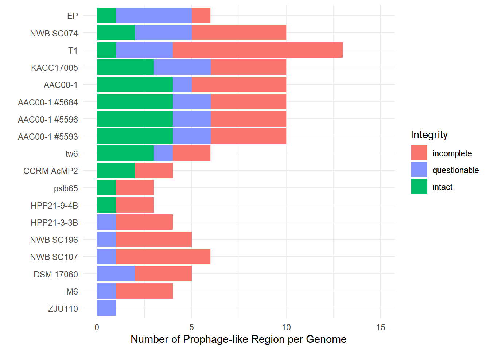
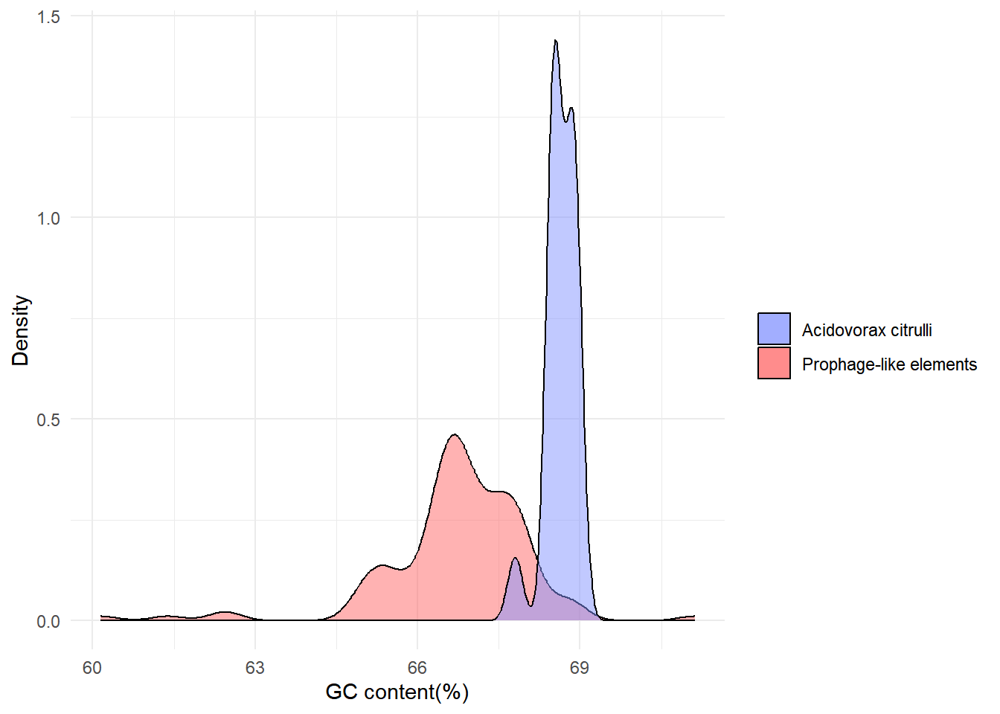
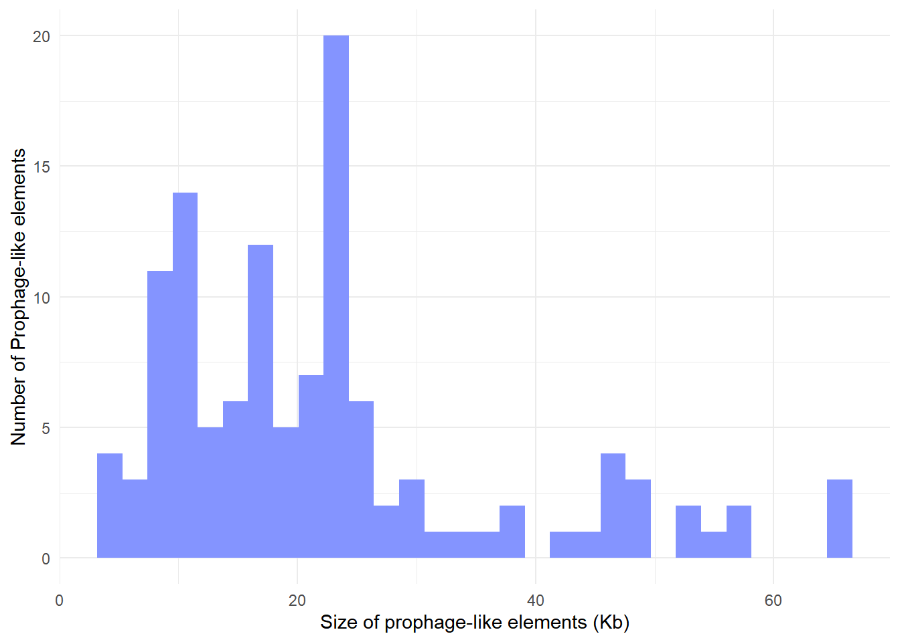
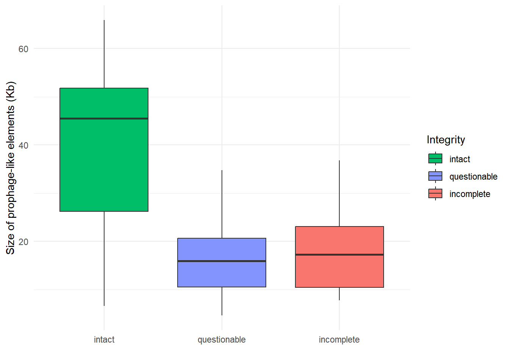
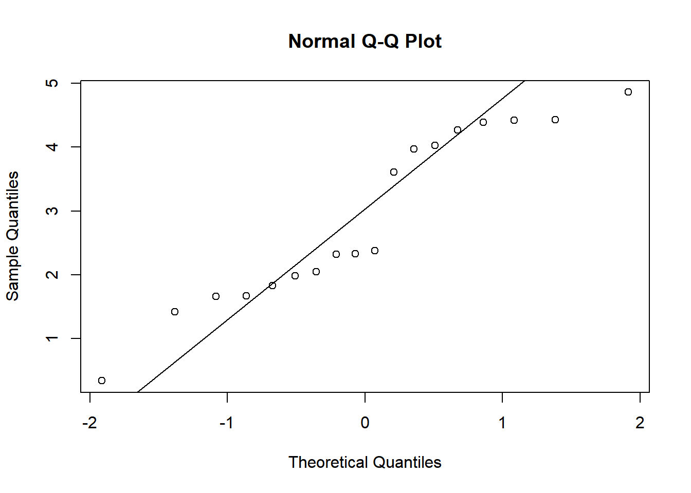
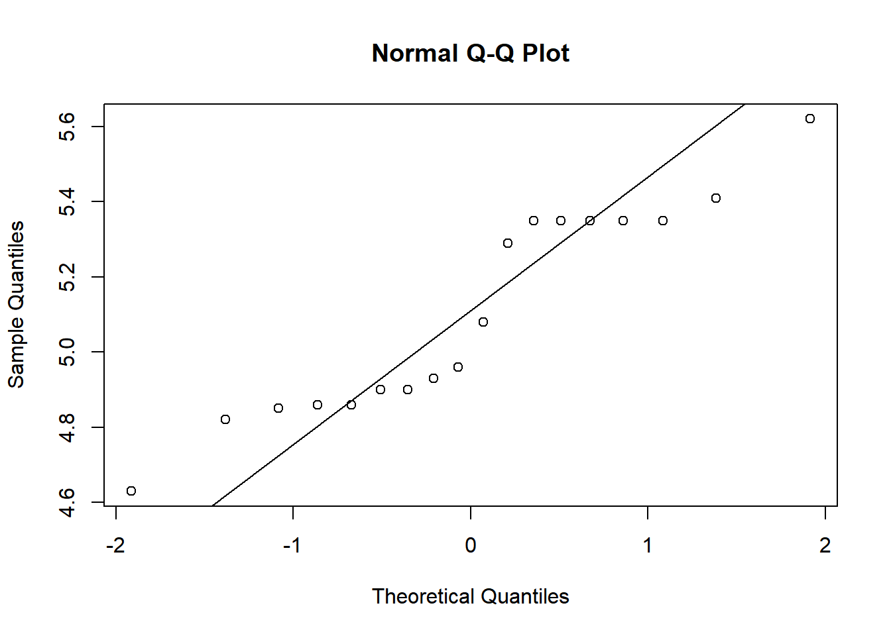
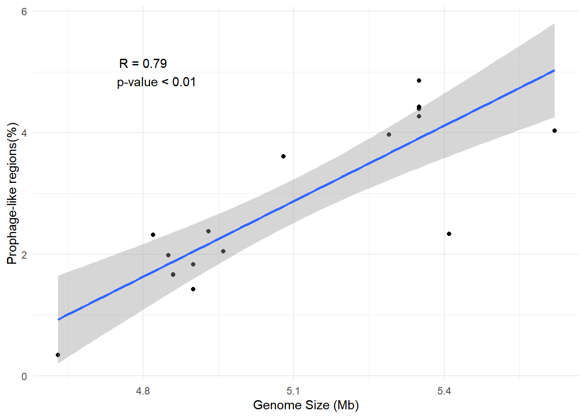
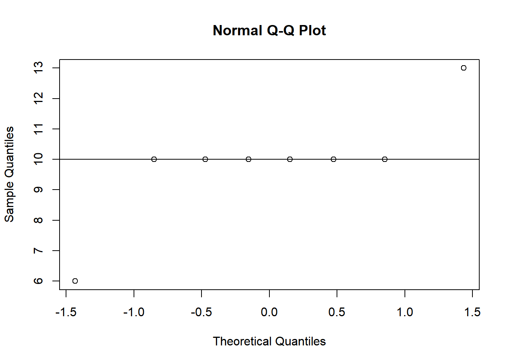
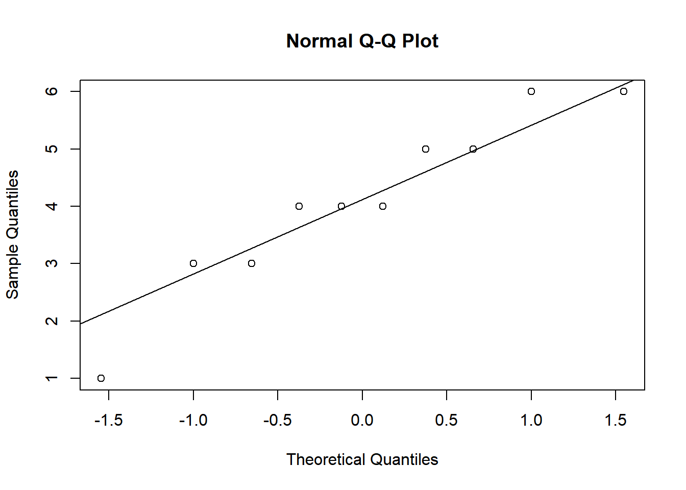
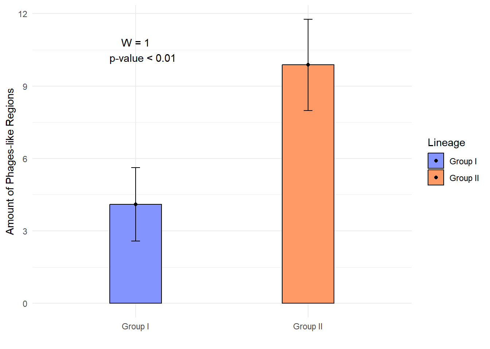

library(tidyverse)
library(readxl)
library(report)
library(DHARMa)Projeto Acidovorax Phage
Detecção de profagos no genoma da bactéria
Primeiro vamos carregar todas as bibliotecas que vamos usar nesse trabalho
Vamos criar um gráfico de barras empilhado para demonstrar a detecção de profagos em cada isolado e a sua classificação de integridade.
Aqui, nós vamos carregar um data frame e vamos chamá-lo de df1. E logo após, nós vamos editar uma tabela do formato larga para o formato longo. Assim, juntando as variáveis Intact, questionable e incoomplete em uma única variável chamada classification
classification <- read_excel("Dataset_Acc.xlsx", "classification")
df <- classification |>
pivot_longer(
cols = intact:incomplete,
names_to = "classification",
values_to = "value"
)stacked_bar
#Aqui eu vou definir manualmente a ordem dos isolados que eu quero que apareça
df$strain <- factor(df$strain, levels = c("ZJU110", "M6", "DSM 17060", "NWB SC107", "NWB SC196","HPP21-3-3B", "HPP21-9-4B", "pslb65", "CCRM AcMP2", "tw6", "AAC00-1 #5593", "AAC00-1 #5596", "AAC00-1 #5684", "AAC00-1", "KACC17005", "T1", "NWB SC074", "EP"))
#Converter a coluna "classification" em uma variável nessa ordem específica
df$classification <- factor(df$classification, levels = c("incomplete", "questionable", "intact"))
#Agora vou criar um gráfico de barras empilhadas
df |>
ggplot(aes(fill = classification, y = strain, x = value)) +
geom_bar(position="stack", stat="identity") +
labs(fill = "Integrity") +
labs(y = " ", x = "Number of Prophage-like Region per Genome") +
scale_fill_manual(values = c(incomplete = "#F8766D", questionable = "#8494FF", intact = "#00BE67")) +
theme_minimal() +
scale_x_continuous(limits = c(0,15))
DIFERENÇA NO CONTEÚDO GC
phages <- read_excel("Dataset_Acc.xlsx", 3)
bac <- read_excel("Dataset_Acc.xlsx")
bac$`GC(%)` <- as.numeric(bac$`GC(%)`)
phages$gc_phage <- as.numeric(phages$gc_phage)
phages# A tibble: 120 × 12
`N°` strain group `Access number` Prophage-like elemen…¹ `Contig (location)`
<dbl> <chr> <chr> <chr> <dbl> <chr>
1 1 AAC00… grup… NC_008752 1 1 (557260-569777 )
2 2 AAC00… grup… <NA> 2 1 (757777-768236)
3 3 AAC00… grup… <NA> 3 1 (1757298-1802907)
4 4 AAC00… grup… <NA> 4 1 (1845873-1866259)
5 5 AAC00… grup… <NA> 5 1 (1877991-1906636)
6 6 AAC00… grup… <NA> 6 1 (1907029-1944343)
7 7 AAC00… grup… <NA> 7 1 (2571459-2628861)
8 8 AAC00… grup… <NA> 8 1 (3700345-3708165)
9 9 AAC00… grup… <NA> 9 1 (3719583-3742692)
10 10 AAC00… grup… <NA> 10 1 (4568376-4585713)
# ℹ 110 more rows
# ℹ abbreviated name: ¹`Prophage-like elements`
# ℹ 6 more variables: size_phage <chr>, per_genome <chr>, t_gen <chr>,
# classification <chr>, gc_phage <dbl>, CDS <dbl>ggplot() +
geom_density(data = phages,
alpha = 0.5,
aes(gc_phage,
fill = "Prophage-like elements")) +
geom_density(data = bac, alpha = 0.5,
aes(bac$`GC(%)`, fill = "Acidovorax citrulli"))+
labs(x = "GC content(%)",
y = "Density",
fill = " ") +
scale_fill_manual(values = c('Acidovorax citrulli' = "#8494FF",
'Prophage-like elements' = "#FF6666")) +
theme_minimal()
Tamanho dos Elementos semelhantes a fagos
Agora eu vou criar um gráfico mostrando a distribuição do tamanho das sequências semelhantes a fagos, com as informações da aba 3
Histograma de distribuição
#Algum problema ocorreu e o dataframe mostra que a variável size_phage que representa o tamanho dessas sequências não eram valores numéricos. Então eu usei a função as.numeric para torná-la numérica.
phages$size_phage <- as.numeric(phages$size_phage)
p_szclass <- phages |>
select(size_phage, classification)
p_szclass |>
ggplot(aes(size_phage)) +
geom_histogram(fill = "#8494FF")+
theme_minimal() +
labs(fill = "Classification") +
labs(y = "Number of Prophage-like elements", x = "Size of prophage-like elements (Kb)")
Boxplot tamanho x Integridade
#Definindo a ordem dos Boxplot que eu quero que apareça
p_szclass$classification <- factor(p_szclass$classification, levels = c("intact", "questionable", "incomplete"))
#BOXPLOT
p_szclass |>
ggplot(aes(classification, size_phage, fill = classification)) +
geom_boxplot() +
labs(y = "Size of prophage-like elements (Kb)",
x = " ",
fill = "Integrity") +
scale_fill_manual(values = c(incomplete = "#F8766D", questionable = "#8494FF", intact = "#00BE67")) +
theme_minimal()
Influência de profagos na evolução do genoma de Acidovorax citrulli
Manipulação de dados para a Correlação
Vamos analisar agora a correlação entre o tamanho do genoma da bactéria e o tamanho dessas sequências encontradas.
bac_g <- bac |>
select(Strain, Size)
pg_g <- phages |>
select(strain, t_gen)
pg_g_sem_duplicatas <- distinct(pg_g)
g_junto <- merge(bac_g, pg_g_sem_duplicatas, by = "strain", "Strain")
t_gen_numeric <- as.numeric(g_junto$t_gen)
size_numeric <- as.numeric(g_junto$Size)
gcor <- data.frame(size_numeric, t_gen_numeric)Correlação de Pearson
Agora eu vou calcular a correlação entre as duas variáveis Tamanho do genoma do isolado e o percentual de regiões semelhantes a profagos encontradas
cor.test(gcor$size_numeric, gcor$t_gen_numeric)
Pearson's product-moment correlation
data: gcor$size_numeric and gcor$t_gen_numeric
t = 6.6272, df = 16, p-value = 5.814e-06
alternative hypothesis: true correlation is not equal to 0
95 percent confidence interval:
0.6484692 0.9452063
sample estimates:
cor
0.8561417 Análise exploratória
Testando a normalidade
shapiro.test(gcor$t_gen_numeric)
Shapiro-Wilk normality test
data: gcor$t_gen_numeric
W = 0.90804, p-value = 0.07947p-value > 0.05A variável não apresentou normalidade para a variável que representa o Percentual de fagos no genoma
shapiro.test(gcor$size_numeric)
Shapiro-Wilk normality test
data: gcor$size_numeric
W = 0.90244, p-value = 0.06337O mesmo também foi observado para a variável tamanho do genoma dos isolados. Um p-valor > 0.05. Demonstrando que os dados não apresentam normalidade.
qqnorm(gcor$t_gen_numeric)
qqline(gcor$t_gen_numeric)
qqnorm(gcor$size_numeric)
qqline(gcor$size_numeric)
Testanto Homocedasticidade
var.test(gcor$size_numeric, gcor$t_gen_numeric)
F test to compare two variances
data: gcor$size_numeric and gcor$t_gen_numeric
F = 0.042672, num df = 17, denom df = 17, p-value = 3.009e-08
alternative hypothesis: true ratio of variances is not equal to 1
95 percent confidence interval:
0.01596218 0.11407427
sample estimates:
ratio of variances
0.0426717 Ou seja, os valores apresentam heterocedasticidade.
Spearman - Correlação
cor.test(gcor$size_numeric, gcor$t_gen_numeric, method = "spearman")
Spearman's rank correlation rho
data: gcor$size_numeric and gcor$t_gen_numeric
S = 201.23, p-value = 8.855e-05
alternative hypothesis: true rho is not equal to 0
sample estimates:
rho
0.7923278 Spearman - Coeficiente de determinação de
0.7923278*0.7923278[1] 0.6277833Regressão linear + Correlação de Spearman
gcor |>
ggplot(aes(size_numeric, t_gen_numeric)) +
theme_minimal() +
geom_point()+
geom_smooth(method = "lm") +
labs(x = "Genome Size (Mb)",
y = "Prophage-like regions(%)") +
annotate(geom = "text", x = 4.8, y = 5, label = "R = 0.79
p-value < 0.01")
Podemos ver que quanto maior o genoma, maior a quantidade de Prophage-like
Teste T
Para realizar o Teste T, é preciso separar os valores em colunas diferentes.
t <- df |>
aggregate(value ~strain + group, FUN = sum) |>
pivot_wider(id_cols = 1,
names_from = group,
values_from = value)
t.test(t$`Group I`, t$`Group II`)
Welch Two Sample t-test
data: t$`Group I` and t$`Group II`
t = -7.0217, df = 13.387, p-value = 7.712e-06
alternative hypothesis: true difference in means is not equal to 0
95 percent confidence interval:
-7.546586 -4.003414
sample estimates:
mean of x mean of y
4.100 9.875 O teste t é um teste paramêtrico e precisa assumir duas premícias: 1. Normalidade dos dados 2. Homocedasticidade
Homocedasticidade
var.test(t$`Group I`,t$`Group II`)
F test to compare two variances
data: t$`Group I` and t$`Group II`
F = 0.65349, num df = 9, denom df = 7, p-value = 0.5408
alternative hypothesis: true ratio of variances is not equal to 1
95 percent confidence interval:
0.1354883 2.7427266
sample estimates:
ratio of variances
0.6534897 hipotese nula é que as variancias são iguais. Então como o p-value é maior que 0.05 nós aceitamos a hipótese nula. A hipótese que as variâncias são iguais.
Testando normalidade
shapiro.test(t$`Group I`)
Shapiro-Wilk normality test
data: t$`Group I`
W = 0.92925, p-value = 0.4406shapiro.test(t$`Group II`)
Shapiro-Wilk normality test
data: t$`Group II`
W = 0.72116, p-value = 0.003899Análise visual
qqnorm(t$`Group II`)
qqline(t$`Group II`)
qqnorm(t$`Group I`)
qqline(t$`Group I`)
Teste de Mann-Whitney
wilcox.test(t$`Group I`, t$`Group II`)
Wilcoxon rank sum test with continuity correction
data: t$`Group I` and t$`Group II`
W = 1, p-value = 0.0004598
alternative hypothesis: true location shift is not equal to 0Então, segundo o teste de Mann-Whitney, o valor de p é menor que 0.05, logo, se rejeita a hipótese nula. A hipótese de que eles são iguais.
#Esse é o cóodigo para o gráfico top que eu quero
df |>
aggregate(value ~strain + group, FUN = sum) |>
group_by(group) |>
summarise(phage_mean = mean(value),
phage_sd = sd(value)) |>
ggplot(aes(group, phage_mean, fill = group)) +
geom_col(width = 0.3,
color = "black") +
geom_point() +
geom_errorbar(aes(ymin = phage_mean - phage_sd,
ymax = phage_mean + phage_sd,
width = 0.05)) +
labs(y = "Amount of Phages-like Regions") +
labs(x = " ", fill = "Lineage") +
scale_fill_manual(values = c('Group I' = "#8494FF",
'Group II' = "#FF9966")) +
annotate(geom = "text", x = 1, y = 10.5, label = "W = 1
p-value < 0.01") +
theme_minimal() 